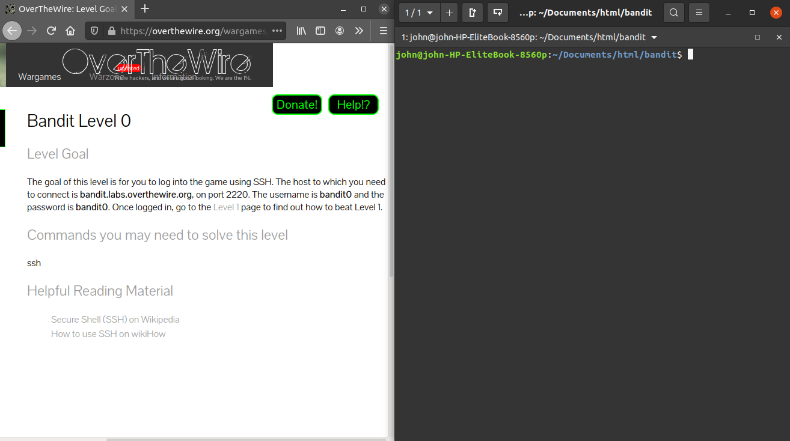

Open a Google
Doc where you can save the passwords to each level.
Open Ubuntu and log in.
Open Bandit: https://overthewire.org/wargames/bandit/bandit0.html
Position both windows on your screen side-by-side so you can see them, like this:

Level 0
Read the Level Goal.
Log in to the level:
ssh bandit0@bandit.labs.overthewire.org -p2220
Use the password they give you in the Level Goal.
Level 0 --> Level 1
Read the Level Goal.
Use cat - this one is easy!
Save the password in your Google Doc.
Exit this level with the command:
exit
Level 1
--> Level 2
Read the Level Goal.
Log in to Level
1:
ssh bandit1@bandit.labs.overthewire.org -p2220
...use the
password you found in the last level.
This
one is a little tricky, because the filename they give you for the
location of the next password makes it difficult to cat. Try the cat
command on it, but it won't work correctly because cat thinks you're
trying to indicate an option.
Hint:
When you find it, save the next password in your Google Doc.
Exit this level with the command:
exit
Level 2 --> Level 3
Read the Level Goal.
Log in to Level
2:
ssh bandit2@bandit.labs.overthewire.org -p2220
...use the password you found in the last level.
Since the filename has spaces in it, you can't just type it in after cat.
Hint:
Just type the first few letters and hit tab.
When you find
it, save the next password in your Google Doc.
Exit this level with the command:
exit
Level 3
--> Level 4
Read the Level Goal.
Log in to Level
3:
ssh bandit3@bandit.labs.overthewire.org -p2220
...use the password you found in the last level.
This
level involves a hidden file! Go to the directory in the Level Goal
(with cd) and try to view any files there (with ls).
Hint: The way to view hidden files with ls is described on page 8 of the "Linux Basics for Hackers" packet.
When you find
it, save the next password in your Google Doc.
Exit this level with the command:
exit
Level 4
--> Level 5
Read the Level Goal.
Log in to Level
4:
ssh bandit4@bandit.labs.overthewire.org -p2220
...use the password you found in the last level.
For
now just look through all the files one at a time.
Next
time we talk, I'll show you a special command to find a human-readable
file automatically.
When you find it, save the next password in your Google Doc.
Exit this level with the command:
exit